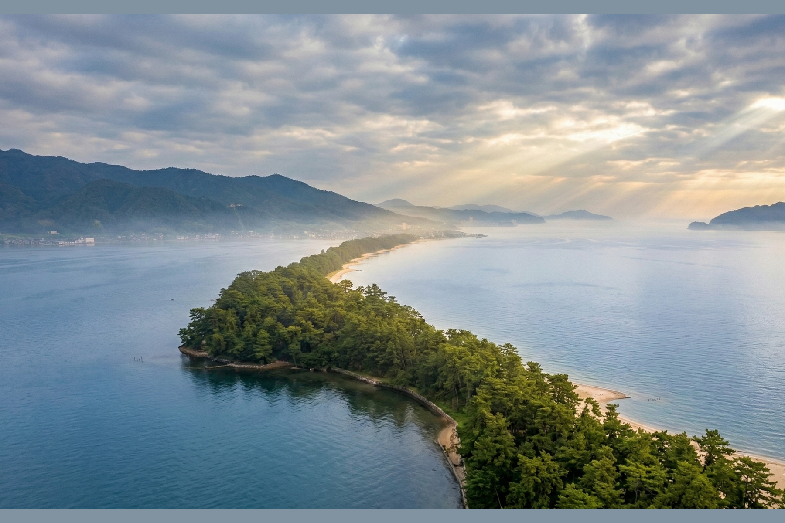
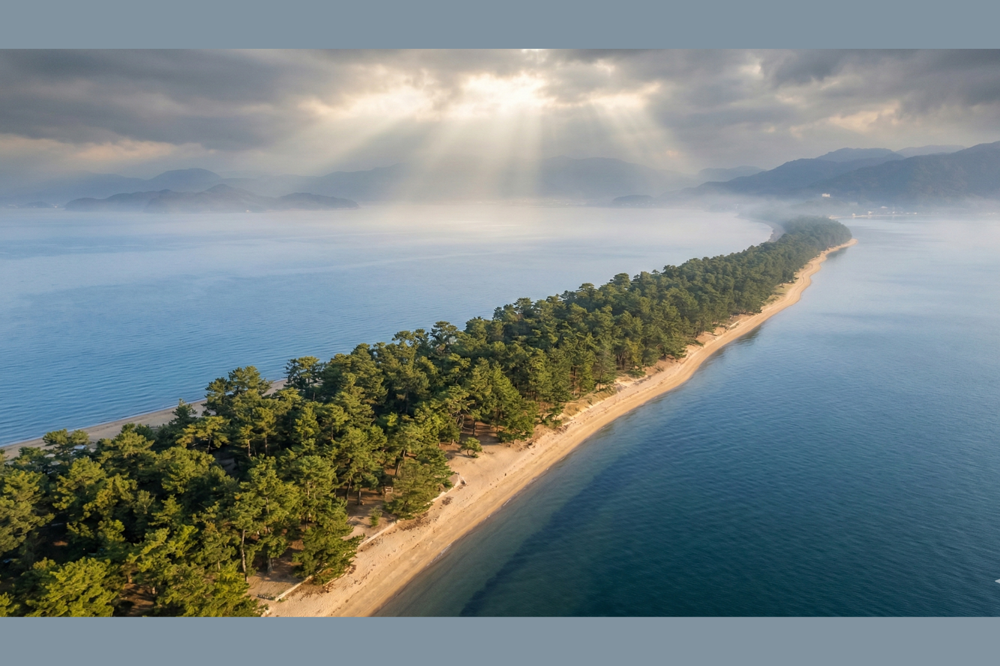

There is a place in Japan that looks as if a stairway to heaven simply fell into the sea. This is Amanohashidate—one of Japan’s Three Scenic Views.
Many see it as a beautiful landscape. I see it as a bridge born from a divine accident.
There is a place in Japan that looks as if a stairway to heaven simply fell into the sea. This is Amanohashidate—one of Japan’s Three Scenic Views.
Many see it as a beautiful landscape. I see it as a bridge born from a divine accident.

At the dawn of Japanese mythology, the gods Izanagi and Izanami stood upon the Ame-no-Ukihashi—the Floating Bridge of Heaven. From there, they created the islands of Japan.
But legend tells a more intimate story. This bridge was Izanagi’s private path from heaven to earth to visit his wife.
A divine “commuting husband.”
One day, while resting, the bridge collapsed. It tumbled from the clouds and landed in Miyazu Bay.
That fallen bridge is the sandbar we walk upon today. There is something profoundly human about a god accidentally dropping his doorway to heaven, isn’t there?

In many cultures, bridges to the divine are distant or metaphorical— like the Norse Bifrost or Mount Olympus.
But Amanohashidate is different.
It is physical. You can touch the white sand. You can walk beneath thousands of pine trees.
Here, science and spirit coexist. Geology explains its formation. Myth gives it meaning.
When you walk this path, you are walking on the debris of a celestial romance.
When you reach the viewpoints, you will see people bending over to look through their legs.
They call it matanozoki.
It is their playful way of “repairing” the fallen bridge— if only for a second.
If you want to know why we go to such lengths to turn the world upside down, my friend Sari has some deeper reflections on that mystery.